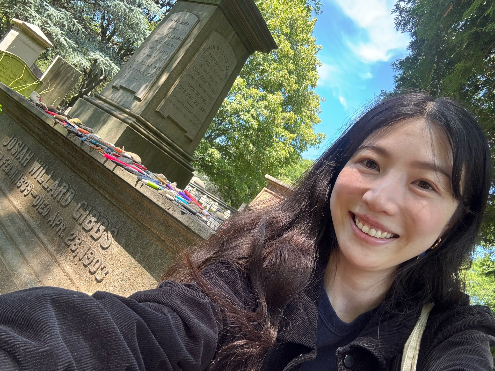

Chuanwan Wu.
Hi, this is Chuanwan (川婉). 川 (chuān) means a stream of water (just like how it looks!), 婉 (wǎn) means gentleness. People often know me more as Christine.
I hold a B.S. in Chemical & Biomolecular Engineering at UC Berkeley's College of Chemistry, and a M.S. in Scientific Computing at Courant Institute at NYU. I'm currently a first-year Ph.D. student in mathematics at University of Pittsburgh.
As a researcher, I consider myself polymorphic. During my undergraduate years, I focused on a 2D material, molybdenum disulfide (MoS2), using electrohydrodynamics techniques. I was lucky to have Prof. Vincent Tung as my advisor, and I also had the privilege of being affiliated with the Molecular Foundry at Lawrence Berkeley National Laboratory, and the Linac Coherent Light Source at SLAC National Accelerator Laboratory. Between my studies, I also gained industry experience as an engineer at biotech companies, working on surface chemistry and thin-film deposition. At Courant, I was fortunate to work with Prof. Esteban Tabak on developing computational algorithms for hyperbolic systems of conservation laws from a fluid dynamics perspective. My current research interests remain broadly centered on partial differential equations (PDEs).
Trained as an experimentalist, I migrated to become a theorist, while staying true to the fundamental principles of nature. 🌿

Me with Josiah Willard Gibbs (New Haven, CT, United States, 2026).
“You have infinite potential when you approach your limits.”
\[\int_{-\infty}^{\infty}\delta(x-a)f(x)\,dx=f(a)\]
Research and Publications
Three-dimensional hierarchically porous MoS2 foam as high-rate and stable lithium-ion battery anode
Wei, X., Lin, C.-C.,Wu, C., Kong, J., Tung, V, et al. Nature Communications, 2022. [Paper Link]
Additive manufacturing assisted van der Waals integration of 3D/3D hierarchically functional nanostructures
Fu, J.-H., Lu, A.-Y., Madden, N. J., Wu, C. C., Kong, J., Tung, V, et al. Communications Materials, 2020. [Paper Link] [Presentation]
Reading Notes
Harmonic Analysis: Oscillatory Integrals of the First Kind
Based on the book Harmonic Analysis: Real-Variable Methods, Orthogonality, and Oscillatory Integrals by Elias M. Stein. [Open in New Tab]
Asymptotics: Geometric Optics, Stationary Phase, and Homogenization
Based on the book Princeton Lectures in Analysis: Fourier Analysis by Elias M. Stein and Partial Differential Equations by Lawrence C. Evans. [Open in New Tab]
Homogenization and Asymptotic Analysis for Highly Oscillating Periodic Structures
Based on the book Asymptotic Analysis for Periodic Structures by A. Bensoussan, J.-L. Lions, and G. Papanicolaou. [Open in New Tab]
Selected Coursework
Numerical Methods II (MATH-GA.2020) HW5: Fourier Stability Analysis, Boundary Layers on Advection-Diffusion Equation
This specific homework is selectd to resonate with the reading notes presented earlier. [Open in New Tab]
Applied Stochastic Analysis (MATH-GA 2704) Final Project: Kinetic Monte Carlo (KMC) Simulations on Falicov-Kimball Model
Based on the paper Anomalous phase separation in a correlated electron system: Machine-learning-enabled large-scale KMC simulations. [Original Paper] [Open in New Tab]
Spec Top in CS: Protein Design (CSCI-GA.3033-111) Final Presentation: Diffusion-Based Generative Models for Protein Structures
Based on the paper Antigen-Specific Antibody Design and Optimization with Diffusion-Based Generative Models. [Original Paper] [Open in New Tab]
Selected Independent Projects
Novozymes Enzyme Stability Prediction
Silver medal (Top 1%, 24/2482) solution in the Novozymes Enzyme Stability Prediction ML competition on Kaggle. [Presentation] [Code]